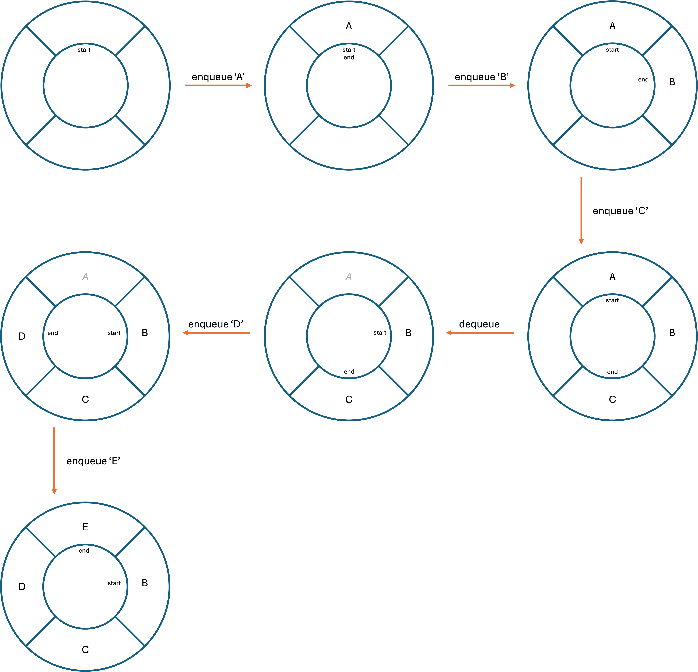

GCSE Link: None
 A circular queue is a static abstract data type which stores a sequence of items.
A circular queue is a static abstract data type which stores a sequence of items.
In a linear queue, space can be wasted when data is dequeued from the front and never re-used. Circular queues fix this problem.
Diagram 1 shows some operations being carried out on a circular queue.
 Diagram 1
Diagram 1

 What is the time complexity of the enqueue and dequeue operations for a queue?
What is the time complexity of the enqueue and dequeue operations for a queue?
They are both O(1) (constant time), because the items never need to be shifted.